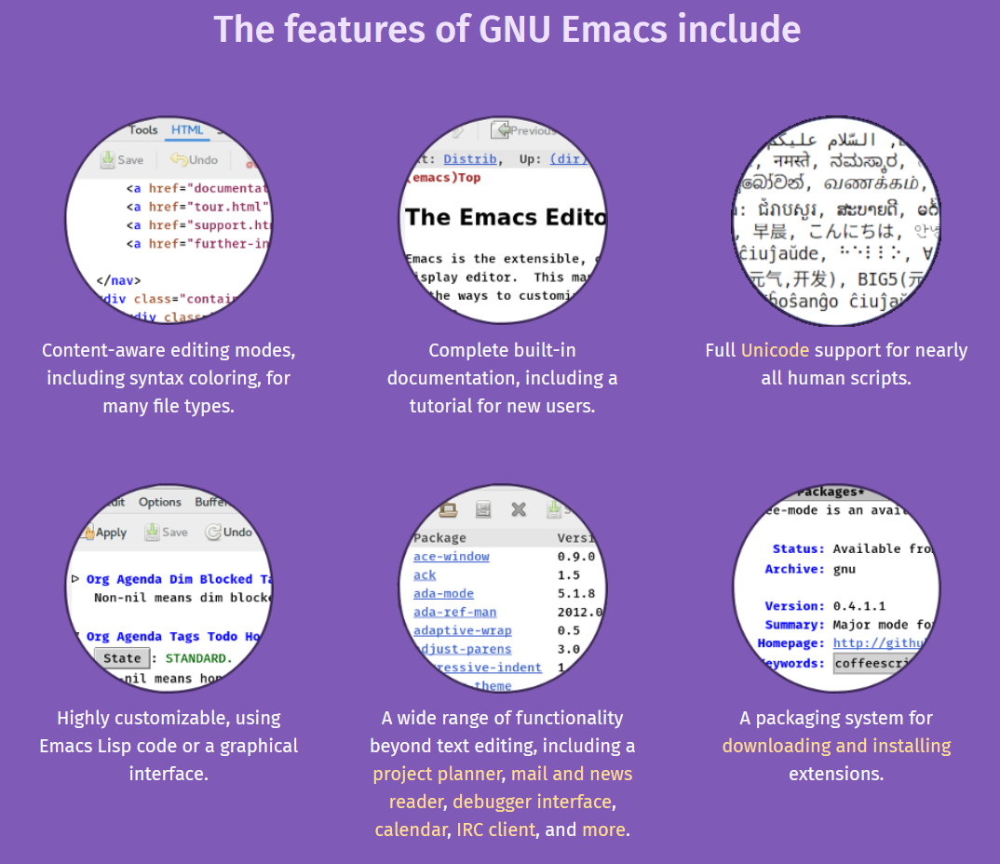

Church of Emacs
Table of Contents
A presentation service of Emacs on the blesseded day, the year 2023 in the month of January, on the 5th day.
You can follow along in the bulletin - https://rbrins.github.io/presentations/2023-01-church-of-emacs.html
1. Opening Hymn
If you want to be a master Of the code you write Use Emacs, my friend And your skills will take flight
With its powerful features And customizable interface Emacs will help you Write code with grace
You'll be able to navigate Through your files with ease And make edits with precision With just a few keys
So if you want to be a hacker Who can tackle any task Emacs is the way to go It's the editor you should ask
A hymn given to us by the preistilessness St.Bill "Nick", given to him in a vision by the honorable ChatGPT
2. Reading of the Day
A reading from GNU Emacs An extensible, customizable, free/libre text editor – and more. At its core is an interpreter for Emacs Lisp, a dialect of the Lisp programming language with extensions to support text editing.

3. Sermon
- My Usage of Emacs
- How to Start
- Basic Terminology
- Navigating
- Basic Config
- Using an Org File
3.1. My Usage of Emacs
- Tried many times before
- Most recently picked up in Nov 2022 based on self-reflection needs
- Needed something to aid in productivity (todos, calendar) and programming
- Wanted something tightly integrated to other tools
- Ability to automate easily
- Able to code my cyber security scripts and programs (python, nim, c++, C#)
- Flat file system that was not propietary or system specific
3.2. How to Start
- Start on the OS you use everyday
- Start with a vanilla blank copy of it
- Use your keyboard only, or not
- Read or watch some basic usage of it
3.3. Basic Terminology
- Commands and Shortcuts
- A command looks like a phrase usually like
find-file - A shortcut looks like a combination of keyboard keys like
C-x C-f - Notation being
C-x C-f (find-file)will show a shortcut with the associated command. - You do NOT have to type the
(find-file)portion if you are doing a shortcut.
- A command looks like a phrase usually like
| Name | Symbol | Keyboard Key |
|---|---|---|
| Meta | M | Alt |
| Control | C | Ctrl |
| Super | S | Windows |
| Shift | Shift | |
- Windows v Frames
- Buffer Windows
- Major and Minor Modes
3.4. Navigating & Figuring it Out
- Opening a file or directory
C-x C-f (find-file)then type (with tab auto-complete) the file or directory - Save a buffer (the current buffer to a file) with
C-x C-s (save-buffer) - kill a buffer (including if open in multiple windows) with
C-x k (kill-buffer) - Switch between windows with
C-x o (other-window)o being the lower case letter - Delete the current window (but doesn't kill the buffer) with
C-x 0 (delete-window)with 0 being zero - Split side-by-side with
C-x 3 - Close emacs with
C-x C-c(Don't be afraid to just close everything and start up again) - Cancel / Quit what you are in the middle of
C-g
3.5. Basic Config
- Set the theme first with
M-x load-theme- if you want the same theme I have, then
M-x package-install RET spacemacs-theme
- if you want the same theme I have, then
.emacsfile usually in~/, lets open it withM-x find-file- should see the theme you set from above
- this file is ran on the start of emacs
- Add a few quality of life configs
- wrapping text in all files with
(add-hook 'text-mode-hook 'visual-line-mode) - adding python to babel with
(org-babel-do-load-languages 'org-babel-load-languages '((python . t)))
- wrapping text in all files with
- save buffer with
C-x C-sthen close withC-x C-cand reopen emacs
3.6. Org Mode
- Org Mode is a powerful Major mode for productivity that is denoted with the
.orgfile extension - Notes, project management, task management, literate programming, publishing blogs, and presentations
- Lets Open
myFirst.orgwithC-x C-f myFirst.org - Title, author, heading, tasks, and code block evaluation, and exporting
4. Closing Hymn
Oh Emacs, the text editor of the gods A tool so powerful and versatile You let me code and write with ease, and nod To all my commands, however terse or complex
Your modes, so numerous and well-designed Allow me to customize every feature And with your vast array of plugins aligned I can extend your capabilities beyond measure
Your power knows no bounds, your potential vast You are the Swiss Army Knife of the digital age I praise you now, and forever will, at last For you are the perfect tool for any stage
Emacs, my love for you will never fade A true masterpiece, the best of its grade
A sonnet by the holy venerable most advanced intelligence, GPT III.5
5. Closing Remarks
- My Personal Emacs Cheat Sheet - HTML
- My Personal Emacs Cheat Sheet - ORG
- Org mode Quickstart
- Much more to explore
- magit is the git tool that makes git even easier
- more productivity tools with things like an obsidian/roam/zettlekasten linking system with org files
- can manage emails, rss feeds, irc chats
- fully automate between the tools and functions
- Go forth and rejoice, as you have heard about emacs!